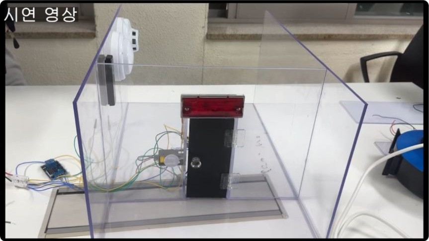
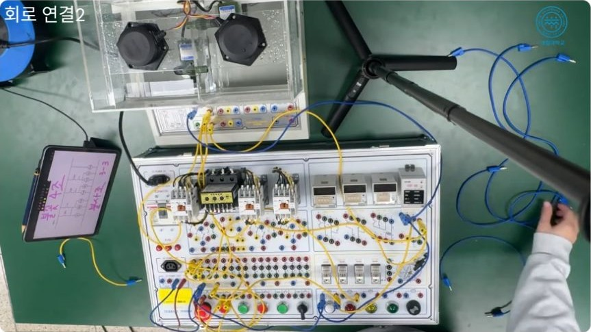
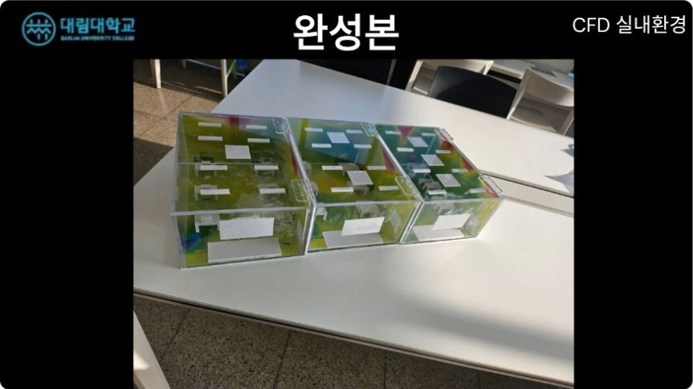

Daelim University
Bachelor's degree program, Fire Safety Systems Engineering
Advanced program following an associate degree
First-semester GPA: 4.12 / 4.5
Hello! I am a research assistant at KICTech's Seoul Research Lab and an undergraduate in fire safety systems engineering at Daelim University.
My background is in fire protection and building services. I am interested in connecting sensor data, AI, and IoT to support disaster detection, evacuation guidance, and device control. My current work involves sensor integration, experiments on edge devices, and testing how the parts of a system work together.
I am preparing to apply for a master's program starting in March 2027. I welcome conversations about research and projects in these areas.
Contributed to a project connecting sensing, activity recognition, and an IoT hub for people living alone. I proposed and helped develop a workflow that activates Raspberry Pi–Hailo activity recognition when a time-of-flight (ToF) sensor detects a person.
My work included preparing everyday sound data, running training, deploying to Hailo, and setting up and testing Home Assistant. The team demonstrated local vision-language-model activity recognition on an edge device and repeated control of devices connected to the hub.
Implementation used AI coding assistance. My contribution focused on sensor and device integration and system workflow, rather than model architecture design.

Led the development of a demonstration prototype connecting a fire detector, door lock, and indicator lights. I coordinated materials, built the model and drawings, and prepared project worksheets.
The control logic included a three-second delay before locking, an interlock preventing locking while the door was open, and an emergency release button. After changing topics in session seven, we completed the prototype in the four remaining sessions and demonstrated it at the Daelim Tech Fair.
Participated in full-mesh router and iperf3 tests, temperature testing for in-wall installation, and heat-dissipation planning. I reviewed UL 94 V-0 material requirements and organized test-lab submission procedures and a preliminary self-check guide.
This work connected my fire-protection background with product evaluation across connectivity, temperature, and fire-safety requirements.
Connected temperature and smoke sensor readings to MQTT messaging, a database, and a web dashboard. Practiced simulated control of a fan, alarms, smartphone notifications, and a servo-driven smoke-vent window.
The training highlighted how sensor errors, communication delays, and power loss affect device behavior.

Led a control-system design team, working on temperature-control circuits and presentation materials. Coursework covered self-holding circuits, tank water-level control, Arduino heating and cooling control, and a PLC quiz buzzer.

Compared office temperature and airflow distributions with one, two, and three air-conditioning units operating. In 2024, I coordinated the club project, built a transparent visualization model, and reviewed results with an industry mentor before exhibiting at the Daelim Tech Fair.
The limitations of simulation assumptions led me to consider comparison with measurements and careful documentation of sensor locations and measurement conditions.
Bachelor's degree program, Fire Safety Systems Engineering
Advanced program following an associate degree
First-semester GPA: 4.12 / 4.5
Associate degree, Fire Safety Systems
Three-year curriculum
Overall GPA: 3.68 / 4.5
Research Assistant · Alongside undergraduate studies
ToF sensing, Hailo recognition experiments, sound classification, Home Assistant integration, and in-wall access point evaluation.
Field Trainee · Five weeks
Sensor acquisition, MQTT communication, web visualization, and simulated equipment control.
Intern
Reviewed instrumentation circuit diagrams and checked for errors.
Preparing for Korean Engineer Fire Protection Facilities and Engineer Building Facilities certification exams.